Wudang Mountain · Danjiangkou, Hubei
Yuanhe Meisu
A courtyard house at the entrance to the Wudang scenic area — a slower, well-planted stay, and one of the two houses offered on the 24 Solar Terms retreats.
Yuanhe Meisu — 驿雲·元和美宿 — stands in Yuanheguan Village, in Danjiangkou, Shiyan, Hubei, just by the gate of Wudang Mountain, a UNESCO World Heritage Site and a principal destination of Chinese Daoism. The English name we use is Yuanhe Meisu; the façade also carries the words Rest Withcloud Hotels & Resorts.
The house was created as a Beijing counterpart-assistance project, converted from Yuanheguan Village itself. The buildings cover about 10,000 square metres. The idea of the place is a quality holiday of light travel and slow living: healthy, a return to nature, and close to the Daoist wellness of the mountain.
A lived programme of ten practices
Life in the house is organised around ten practices: the Way, movement, books, food, medicine, incense, flowers, tea, music, and children. They are not a list of slogans. They are the shape of a day here — a walk under the trees, a quiet room for reading, a table of seasonal cooking, a cup of tea, a little music in the hall — so that a stay has the feeling of a cultural programme, lived rather than announced.
The rooms
One hundred and twenty rooms of different styles are planned; eighty-two are in use, and the house can host about two hundred guests. The gardens cover the grounds entirely, and the courtyards are handsome in every season, which makes the place a good setting for traditional dress and for photographs.
The rooms fall into two families:
- Yinju Guanli (隐居观里), the courtyard. A standalone hot-spring courtyard, view suites, deluxe king rooms, deluxe twin suites, and comfortable twins.
- Family rooms. Manmiaowu (漫妙屋) parent-and-child rooms, three-bedroom two-living-room family suites, and duplex family suites.
Breakfast is included when you stay here on the retreat.
The street address, as given on the listing, is Group 3, No. 28, Yuanheguan Village, Wudang Mountain Special Economic Zone, Danjiangkou. Guests may check in from 14:00, and depart by 12:00. The house opened in 2021.
On the 24 Solar Terms retreats you stay at Yuanhe Meisu or at Wudang Mountain Narada Resort, not at both. Back to the retreat.
Photographs
The courtyards and the rooms
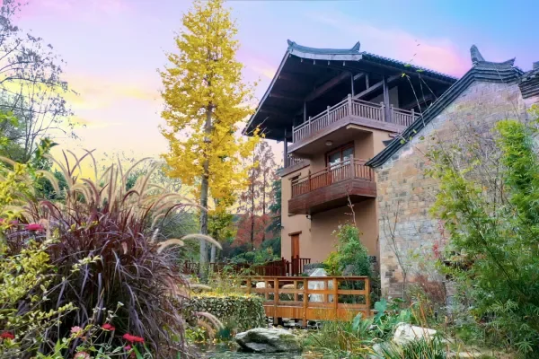
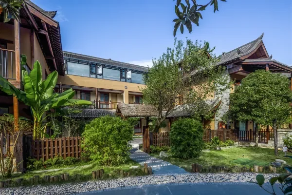
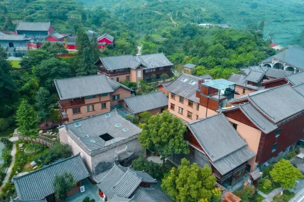
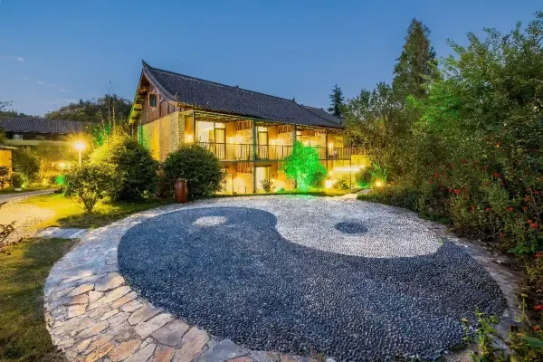
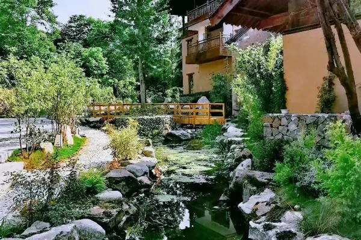
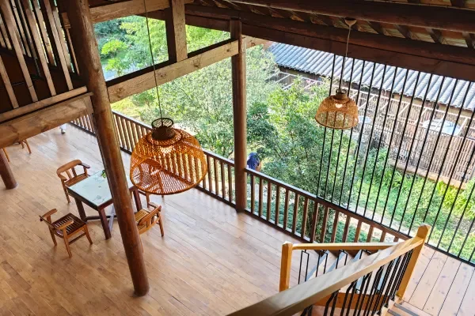


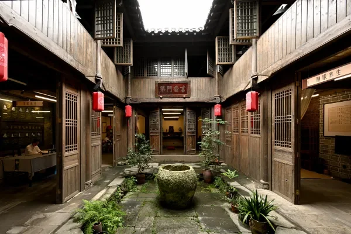

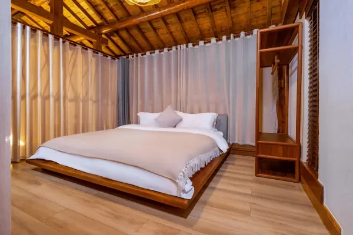
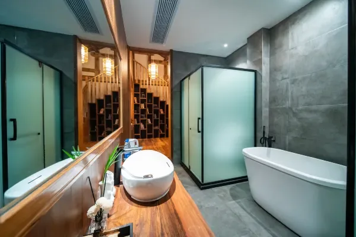
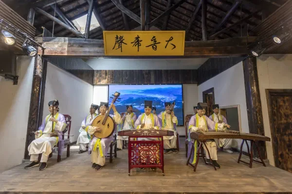
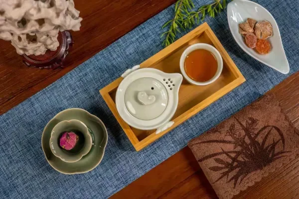
Write to us
A First Conversation
If you would like to travel with us, write a few lines about the season, how many of you there are, and what you have in mind. We will write back with dates, and a sense of what is possible.
You can also reach us on WeChat or WhatsApp — we work in English, Chinese and French. The numbers are available on request.
WeChat and WhatsApp — details on request
This is a demonstration site: the form is not yet connected to a mailbox.